Detailed simulation of the interactions between particles and the LHCb detector
requires significant CPU resources.
LHCb has used over 90% of CPU resources for simulation during Run 2;
Current approaches do not scale to future needs;
Must develop faster simulation options!
2. Fast simulation VS. flash simulation
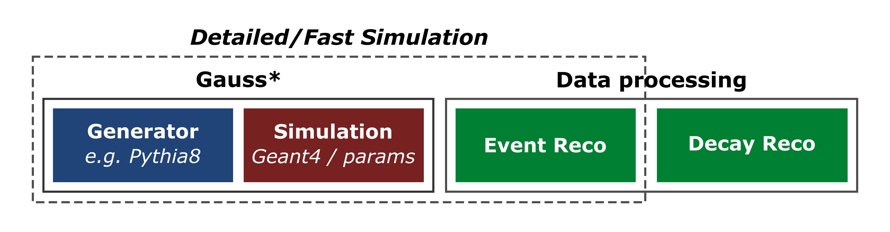
The detailed simulation of physics processes relies on Geant4 and is computed
within Gauss*, the LHCb simulation software. Fast simulation techniques
aim to speed up Geant4 by parameterizing the energy deposits instead of relying on physics models.
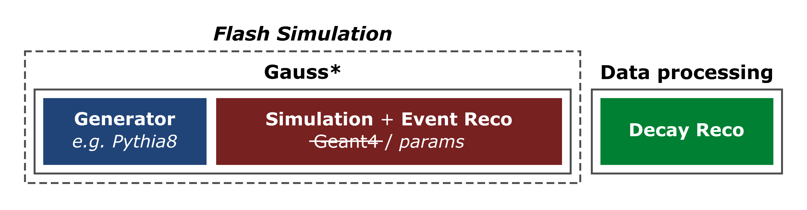
Flash (or Ultra-Fast) simulation
strategies aim to directly transform generator-level particles into analysis-level reconstructed
objects.
3. What is Lamarr?
Lamarr is the novel flash-simulation framework of LHCb, able to offer the
fastest option to produce simulated samples. Lamarr consists of a pipeline of (ML-based)
modular parameterizations designed to replace both the simulation and reconstruction steps.
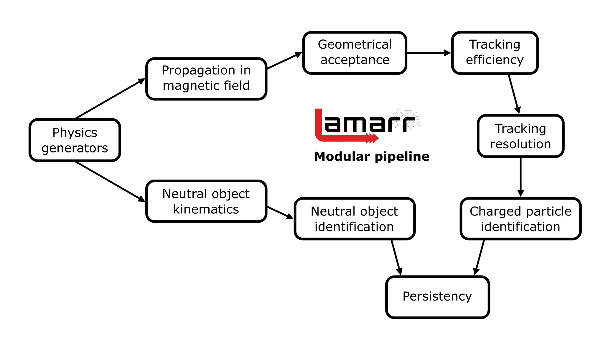
The Lamarr pipeline can be split in two branches:
charged particles require tracking and particle identification models;
neutral objects need to face the particle-to-particle correlation problem.
4. Models under the \(k\)-to-\(k\) hypothesis
Assuming the existence of an unambiguous (\(k\)-to-\(k\)) relation
between generated particles and reconstructed objects, the high-level detector response can be modeled in terms
of efficiency and "resolution" (i.e., analysis-level quantities):
Efficiency:Deep Neural Networks (DNN) trained to perform
classification tasks so that they can be used to parameterize the fraction of "good" candidates (e.g.,
accepted, reconstructed, or selected).
Resolution: Conditional Generative Adversarial Networks
(GAN) trained on detailed simulated samples to parameterize the high-level response of LHCb detector
(e.g., reconstruction errors, differential log-likelihoods, or multivariate classifier output).
5. Charged particles pipeline: the tracking system
Lamarr parameterizes the high-level response of the LHCb tracking system relying on the
following models:
propagation: approximates the trajectory of charged particles through the
dipole magnetic field → parametric model;
geometrical acceptance: predicts which of the generated tracks lay within a sensitive
area of the detector → DNN model;
tracking efficiency: predicts which of the generated tracks in the acceptance are properly
reconstructed by the detector → DNN model;
tracking resolution: parameterizes the errors introduced by the reconstruction algorithms
to the track parameters → GAN model;
covariance matrix: parameterizes the uncertainties assessed by the Kalman filter
procedure → GAN model.
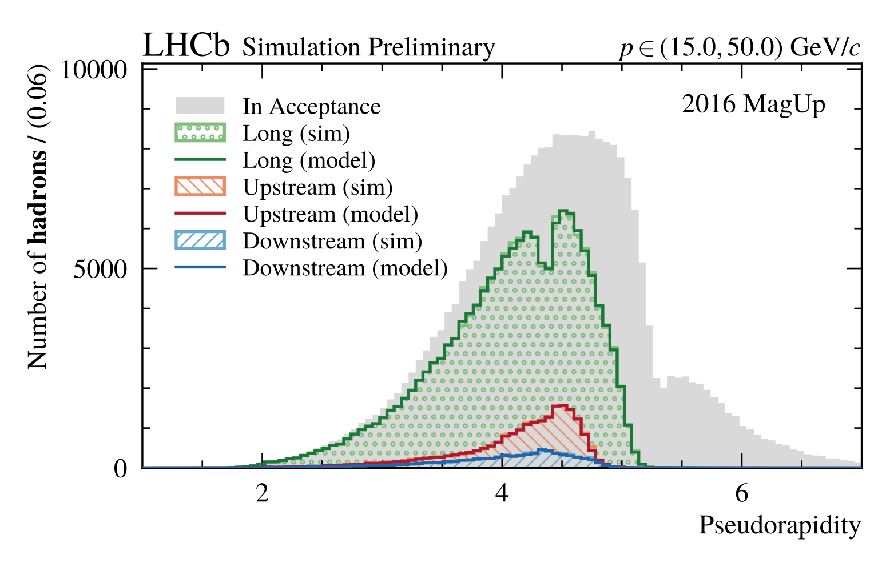
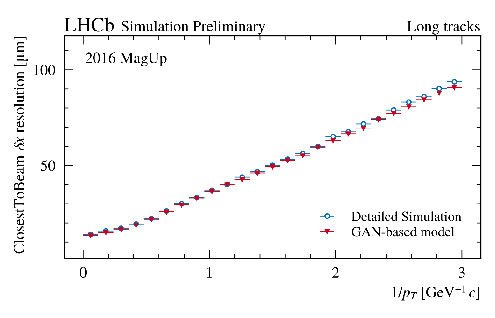
Validation plots for the DNN-based model of the tracking efficiency (left) and the GAN-based model of
the spatial tracking resolution (right).
6. Charged particles pipeline: the PID system
Lamarr parameterizes the high-level response of the LHCb PID system relying on the following
models:
RICH PID: parameterizes DLLs resulting from the RICH detectors →
GAN model;
MUON PID: parameterizes likelihoods resulting from the MUON system →
GAN model;
isMuon flag: parameterizes the response of a FPGA-based criterion for muon loose
boolean selection → DNN model;
Global PID: parameterizes the global high-level response of the PID system,
consisting of CombDLLs and ProbNNs → GAN model.
Lamarr provides separated models for muons, pions, kaons,
and protons for each PID set of variables.
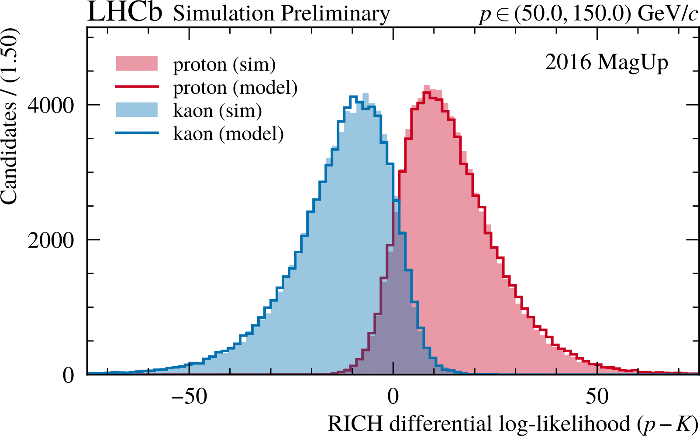
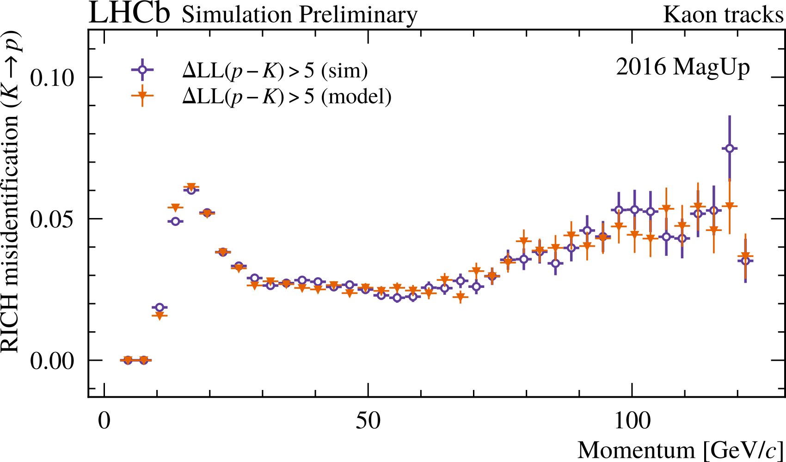
Validation plots for the proton-kaon separation parameterized with the GAN-based models of the RICH
response in terms of distributions (left) and proton selection misidentification (right).
7. Neutral particles pipeline: the ECAL detector
The flash simulation of the LHCb ECAL detector is not trivial task:
bremsstrahlung radiation, converted photons, or merged \(\pi^0\) may lead to have \(n\) generated
particles responsible for \(m\) reconstructed objects (in general, with \(n \ne m)\);
the particle-to-particle correlation problem limits the validity of strategies
used for modeling the unambiguous \(k\)-to-\(k\) detector response.
To parameterize a generic \(n\)-to-\(m\) response of the ECAL detector, solutions inspired by the natural
language translation problem are currently under investigation:
the aim is to define an event-level description of the ECAL response;
assuming ordered sequences of photons/clusters, the problem can be modeled with a
Transformer model;
complying with the problem topology, the ECAL response can be modeled with a
Graph Neural Network (GNN) model
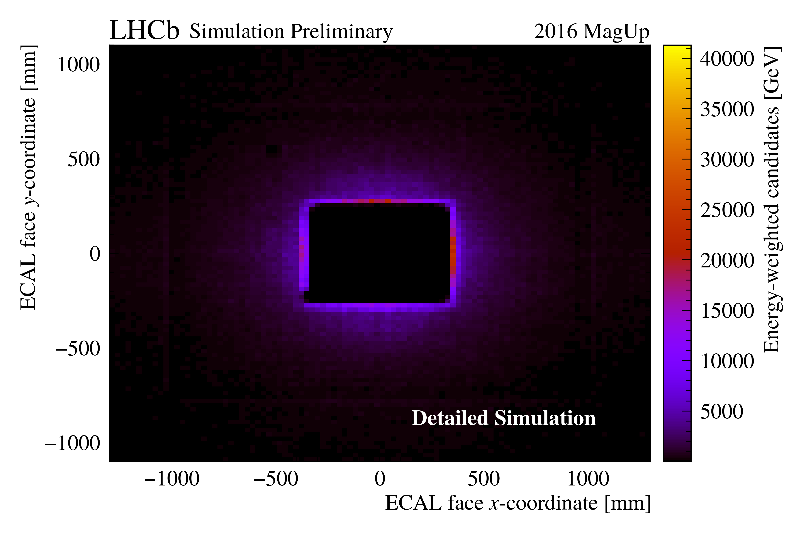
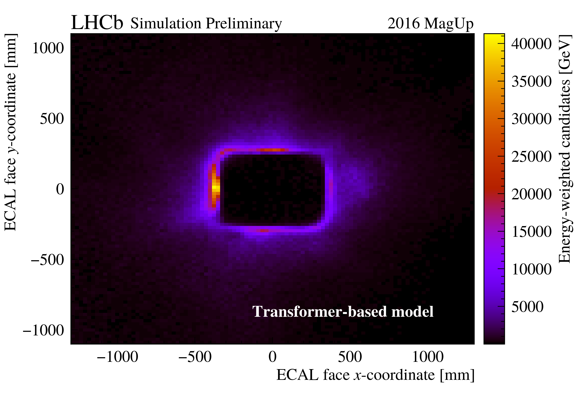
Validation plots for the \((x, y)\)-position of the ECAL clusters as reconstructed by detailed
simulation (left) and a Transformer-based model (right). Each bin entry is properly weighted to
include also the energy signature.
8. Validation campaign
Lamarr provides the high-level response of the LHCb detector by relying on a pipeline of
(subsequent) ML-based modules. To validate the charged particles chain, the distributions
of a set of analysis-level reconstructed quantities resulting from Lamarr have been
compared with that obtained from detailed simulation for \(\Lambda_b^0 \to \Lambda_c^+ \mu^- X\) decays
with \(\Lambda_c^+ \to p K^- \pi^+\).
The deployment of the ML-based models follows a transcompilation approach based on
scikinC. The models are translated to C files, compiled as
shared objects, and then dynamically linked in the LHCb simulation software (Gauss).
The integration of Lamarr with Gauss enables:
interface with all the LHCb-tuned physics generators (e.g., Pythia8, EvtGen);
compatibility with the distributed computing middleware and production environment;
providing ready-to-use datasets for centralized analysis.
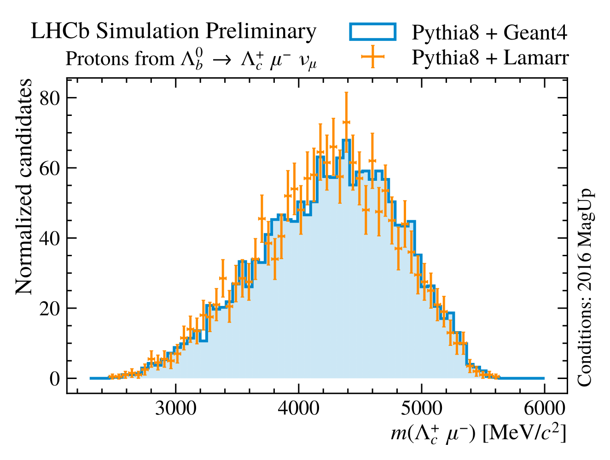
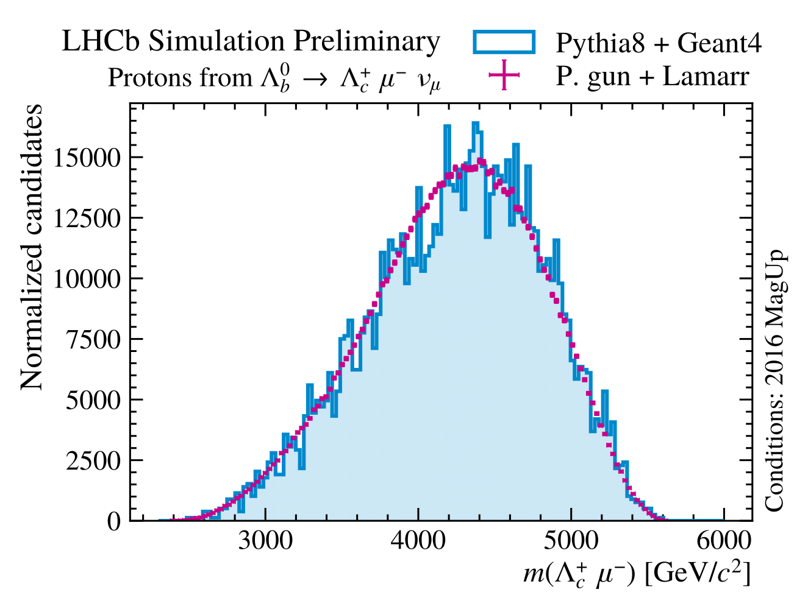
Validation plots for the \(\Lambda_c^+ \mu^-\) mass obtained from Pythia8 (left) and particle-gun (right)
generators by Lamarr VS. detailed simulation. Reproduced from
LHCB-FIGURE-2022-014.
9. Preliminary timing studies
Overall time needed for producing simulated samples has been analyzed for detailed simulation (Geant4-based)
and Lamarr. When Lamarr is employed, the generation of particles from collisions (e.g., with Pythia8)
becomes the new major CPU consumer.
Lamarr allows to reduce the CPU cost for the simulation phase of (at least)
two-order-of-magnitude. Further timing will require speeding up the generators.
The lifecycle of a generic flash-simulation model includes designing, training, optimization,
deployment, and validation, before to be put into production. While the development steps often involve
multiple GPU nodes (HPC paradigm), the validation phase typically relies on the same
distributed computing resources employed in the production environment (HTC paradigm).
The aim of ICSC (Italian Center for SuperComputing) is to create the national digital
infrastructure for research and innovation, leveraging existing HPC, HTC and
Big Data infrastructures and evolving towards a cloud data-lake model. The Lamarr framework is
pioneering such hybrid workloads on distributed and federated resources, employing nodes from
both WLCG data centers and pre-exascale supercomputers (e.g., Leonardo).
11. Conclusions and outlook
Great effort is ongoing to put a fully parametric simulation of the LHCb experiment
into production, aiming to reduce the pressure on computing resources.
DNN-based and GAN-based models succeed in describing the high-level response of the LHCb tracking and
PID detectors for charged particles. Work is still required to parameterize the
response of the ECAL detector due to the particle-to-particle correlation problem.
Future development Lamarr aims to support both integration within the LHCb software stack and its
use as a stand-alone package.
Acknowledgements
The work presented in this contribution is performed in the framework of Spoke 0 and Spoke 2 of the ICSC
project - Centro Nazionale di Ricerca in High Performance Computing, Big Data and Quantum Computing,
funded by the NextGenerationEU European initiative through the Italian Ministry of University and
Research, PNRR Mission 4, Component 2: Investment 1.4, Project code CN00000013 - CUP I53C21000340006.
L. Anderlini et al., Lamarr: the ultra-fast simulation option for the LHCb experiment, PoS ICHEP2022 (2023) 233
M. Barbetti, Lamarr: LHCb ultra-fast simulation based on machine learning models deployed within Gauss, arXiv:2303.11428
L. Anderlini et al., The LHCb ultra-fast simulation option, Lamarr: design and validation, arXiv:2309.13213
F. Vaselli et al., End-to-end simulation of particle physics events with Flow Matching and generator Oversampling, arXiv:2402.13684
M. Barbetti, The flash-simulation paradigm and its implementation based on Deep Generative Models for the LHCb experiment at CERN, PhD thesis, University of Firenze, 2024